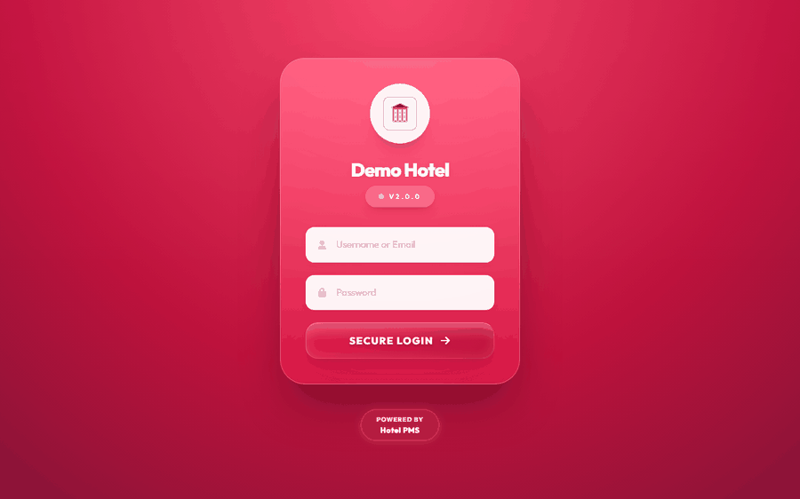
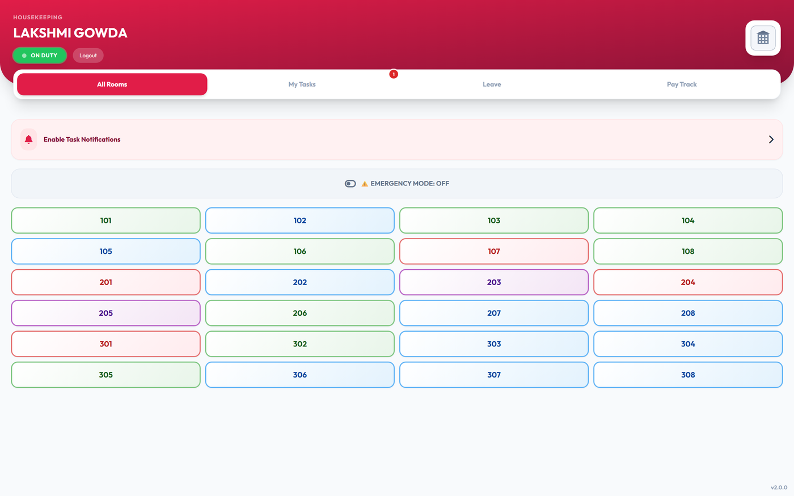
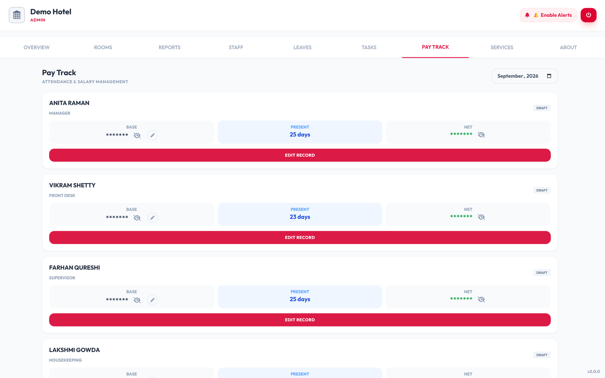
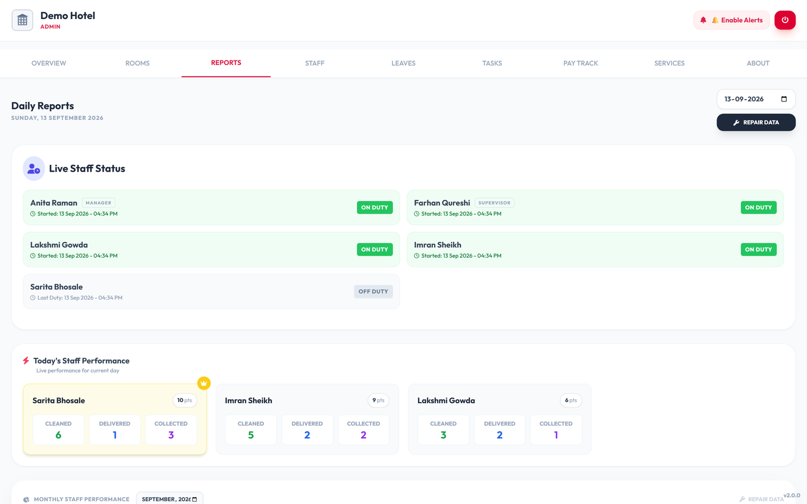
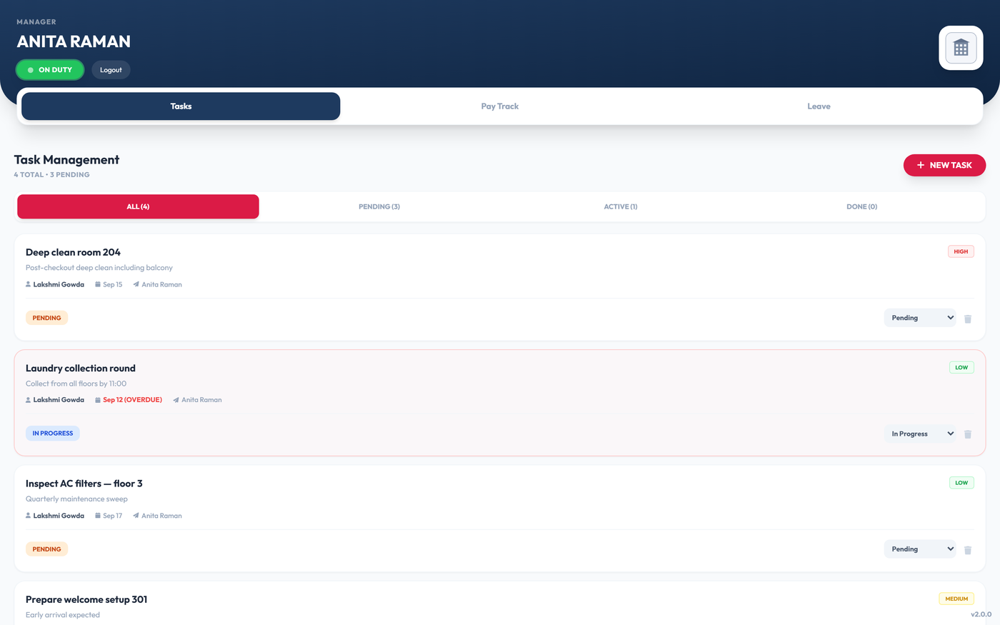

03
Interface
All screenshots captured against a locally seeded demo database. Every name, figure and identifier shown is invented.






Room operations, housekeeping, payroll and staff workflows across five role-based views.
Housekeeping ran on paper. A supervisor walked the floors with a clipboard, wrote down which rooms were dirty, handed slips to housekeepers and collected them back. Front desk had no way to know a room was ready without asking someone. Payroll was reconstructed at month-end from attendance scribbled in a register. The failure mode was always the same: a guest checked into a room nobody had confirmed was clean, or a clean room sat empty because the news had not travelled.
One application covering room state, housekeeping assignment, tasks, leave requests, attendance-derived payroll and an activity log — with the view adapting to whoever logs in. Sole engineer, from on-site requirements through deployment onto hotel hardware.
The parts worth defending in an interview — and why the alternative was worse.
Clean, occupied, checkout, dirty, cleaning, with maintenance and damaged as off-path states. The previous-status field exists because maintenance is an interruption, not a transition: a room coming back from repair needs to return to whatever it was before. One column that removes a whole class of “what was this room before someone flagged the broken AC?” bugs.
Staff performance counts action entries in the activity log for the current day. There is no performance table to drift out of sync; the log is the single source of truth and every number is re-derived on view. The trade-off is that the report depends on the log’s string conventions — a renamed action silently produces a zero rather than an error, and a typed enum would have made that coupling explicit.
Salary, deductions and net pay render hidden behind a per-row reveal. The admin terminal sits at a front desk where staff and guests walk past; a manager opening payroll should not broadcast what everyone earns to whoever is standing there.
The interface blurs itself on PrintScreen, on window blur and when the pointer leaves the page. It is a deterrent against casual capture of guest details, not a defence against a determined attacker, and I would not claim otherwise.
Activation ties an install to a specific machine and is validated server-side on boot. A pragmatic answer to how a solo developer prevents a system being copied to a second property — with a real ongoing cost, since a hardware change becomes a support call.
All screenshots captured against a locally seeded demo database. Every name, figure and identifier shown is invented.





Housekeeping, supervisor, front desk, manager and admin — one build, five different systems.
Occupancy counters and colour-coded state across every floor.
Work assigned to a named person, delivered by push notification.
Requested, delivered, pending collection, returned — so items that went out come back.
Working days, absences, deductions, bonuses and advances, with payment vouchers and PDF export.
Type, date range, reason and an approval trail visible to both sides.
Every status change attributed to a person and a room, with photographs where relevant.
What I would fix next, stated plainly.